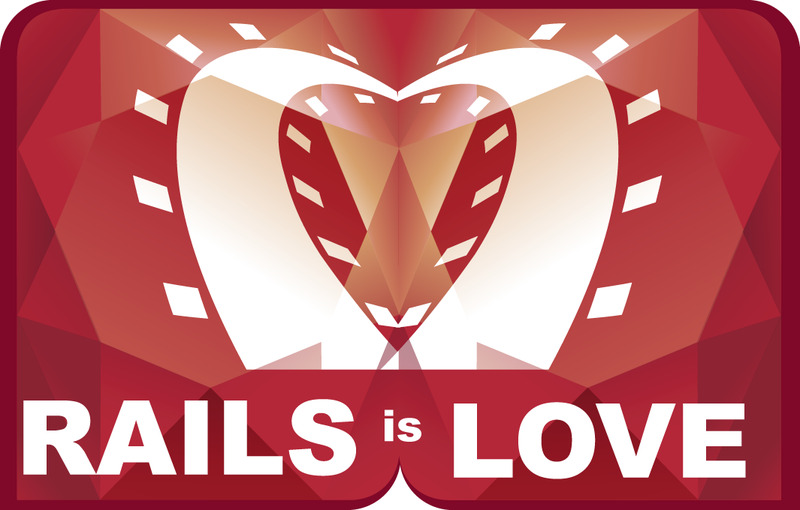

What is Rails?
So far, in Phase 0 we've learned about HTML, CSS, JavaScript, Ruby, and SQL. However, we have yet to touch on Rails. We know that Rails is going to be a huge part of the Dev Bootcamp curriculum, but at this point many of us find ourselves asking..."What exactly is Rails?"
Ruby on Rails, or simply "Rails", is a framework for building websites -- a web framework. It is a software library that extends the Ruby programming language. I was surprised to learn that Rails is simply just a RubyGem that can be installed from the command line, just like any other RubyGem.
 What is a web framework?
A web framework like Rails combines a programming language, like Ruby, with HTML, CSS, and JavaScript to create a web application that runs on a web server. Since it runs on a web server, Rails is considered a back-end, or server side, web application development platform.
Up to this point in phase 0, we've learned how to use HTML, CSS, and a bit of JavaScript. However, up to this point we've been creating 'static websites'. What this means is that the web servers deliver the HTML, CSS, and JavaScript from static (i.e. unchanging) files that are stored on the server. Rails allows us to create dynamic websites, by delivering those HTML, CSS, and JavaScript files from an application server that creates files dynamically using Ruby. In short, Rails uses Ruby to assemble HTML, CSS, and JavaScript files from component files.
Why use Rails over other web frameworks?
From my limited research, the two big advantages I see Rails having over other frameworks are 1) its gigantic library of gems, and 2) its unique inclusion of a "baked-in" testing framework for Test Driven Development.
Rails' first strength, its gigantic library of gems, appears to be its biggest. Why? Because, by using a collection of gems to provide basic functionality to your website, you don't need to re-create the wheel every time you create a new web app. One can think of a Rails application as a collection of gems, plus custom code to add unique features. In addition, each Rails application has a Gemfile in the root directory, which lists each gem used by the application. This helps developers understand how a Rails application was constructed.
Rails' second strength is its inclusion of a "baked-in" testing framework for Test Driven Development. The discipline of Test Driven Development (TDD) was introduced by Rails. The basic idea behind TDD is that one uses tests as an integral part of their programming process. First, one writes test code. Then, one writes code to make that test pass. And so on and so on. One huge benefit of TDD is that making changes to code becomes 'safer', since you can run all of your test code after making changes to make sure nothing 'blows up'. In addition, by testing your code as you write it, you reduce the chance that the end-user encounters bugs.